Mirwais Sarwary
Biomedical / Medical Device Engineer
I design safe, effective, and meaningful medical devices that improve patient outcomes and support healthcare professionals. With a focus on human-centered design, risk management, and cross-functional collaboration, I turn complex challenges into reliable solutions.
- User Centered Design
- Safety and Quality
- Engineering Excellence
- Concept to Market
Scientists study the world as it is;
engineers create the world that has never been.
— Theodore von Kármán

About
Biomedical / medical-device engineer with 20+ years across FDA-regulated products and surgical robotics — who also designs and ships practical software (C# / .NET, Python).
Currently RA/QA Manager at OptalMed LLC (ophthalmic devices), owning quality-system and regulatory readiness work — including the product transition from EU MDD to MDR. I came into this role as an engineer first: it deepens my fluency in how heavily regulated devices actually get designed, verified, and kept on market — knowledge that makes better R&D and stronger future products.
• M.S., Biomedical Engineering (Devices) – San Jose State University
• B.S., Biological & Mechanical Systems Engineering – UC Davis
• Engineer-in-Training (EIT) | Design Control & ISO 13485
• Full-Stack Software Developer Certificate – The Tech Academy (2022)
Background spans concept through V&V, risk (FMEA), CAPA, and manufacturing transfer — plus SolidWorks, rapid prototyping, and team delivery. On the software side I build APIs, web apps, and tooling that sit next to devices and automation.
Open to collaborations in robotics-adjacent systems, device R&D, and software that benefit from both engineering judgment and coding skill. LinkedIn · Email · Contact form
Selected projects
Device R&D cases I can walk through in an interview — plus software samples (telemetry, APIs) and this portfolio site.
Code on GitHub: github.com/mirwaissarwary
Devices · Ophthalmic
MID Labs — MVE, UVE & CIS
Primary R&D + PM on Millennium Vitrectomy Enhancer (pneumatic, 2500 cpm), cutter fail-safe design, and CIS fluid-control work — with UVE lineage context.
Devices · Surgical robotics
PROCEPT — AquaBeam R&D
Consulting fixtures and FA/CAPA, then full-time handpiece manifold redesign (6→1, >90% cost cut) that addressed field failures.
Devices · Python
Device Telemetry Lab
Simulated multi-axis telemetry, PI control, and session metrics — a clean robotics-adjacent Python sample you can clone and run.
C# · .NET 8
SecureTodoApi
.NET 8 Minimal API with JWT auth, EF Core, and Swagger — production-minded API craft for tools that sit next to real systems.
HTML · CSS · JS
Portfolio website
This site — intro gate, layout, and structure for a biomedical / medical-device engineer who also codes.
Profile
GitHub profile
Pinned repos and README at github.com/mirwaissarwary — start with Device Telemetry Lab and SecureTodoApi.
Earlier Tech Academy coursework and Matrix-era site: TTA portfolio archive · Theatre CMS · AppBuilder9000
Software coursework
Tech Academy snapshot — fundamentals I still use next to device work. Broader engineering skills show up in About and the device cases above.
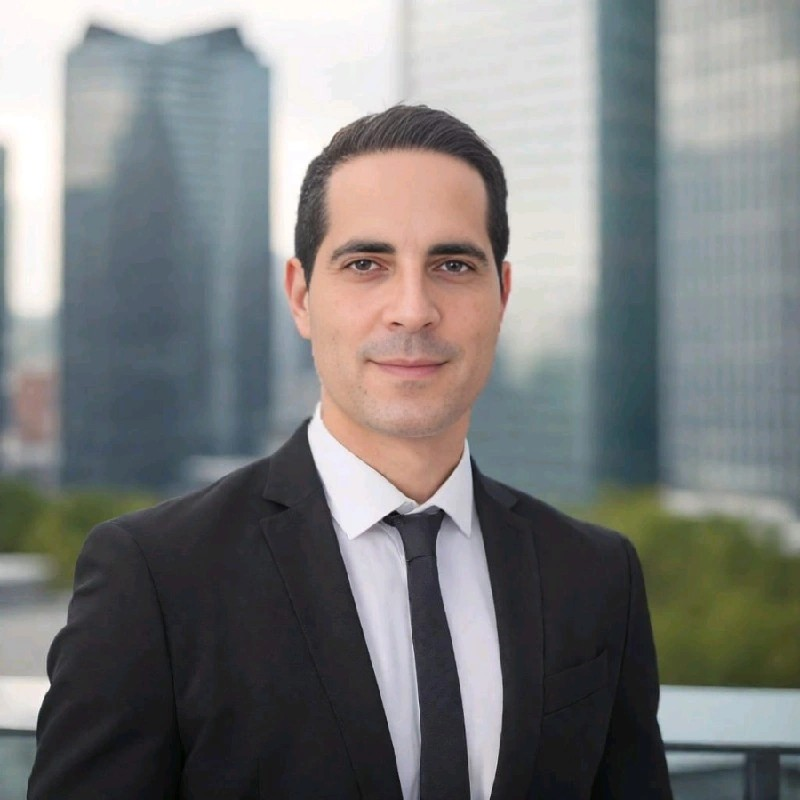
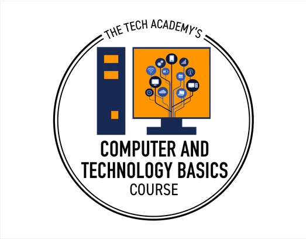
Solid technical fundamentals for device and software work
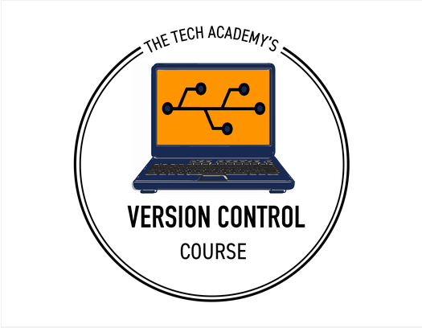
Git, GitHub, and Azure DevOps for team delivery
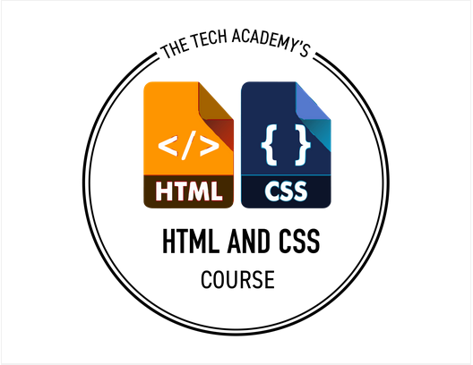
Web interfaces for tools, portals, and device-adjacent apps
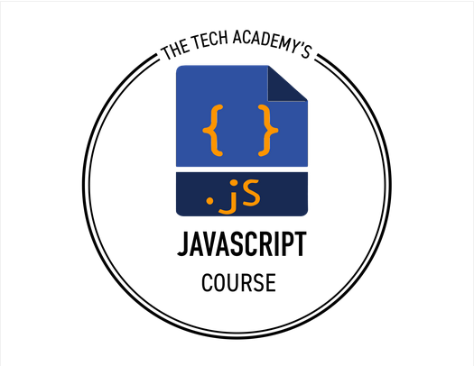
JavaScript for interactive front ends
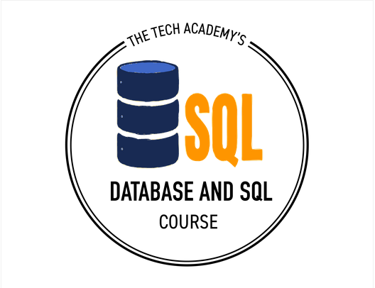
Databases and SQL for structured product data
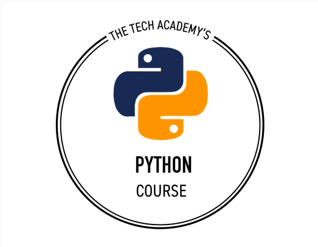
Python for automation, analysis, and services
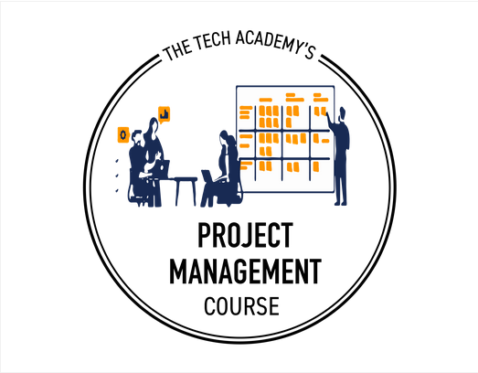
Agile delivery habits from real project teams
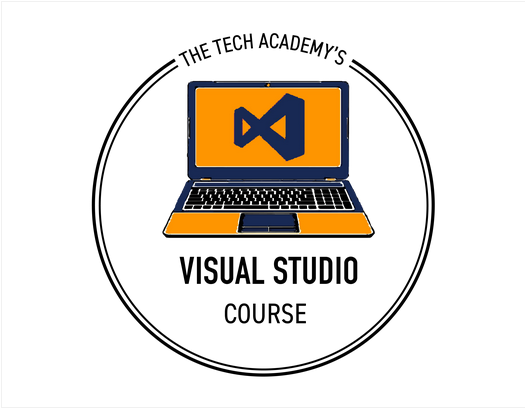
Visual Studio and the Microsoft .NET toolchain
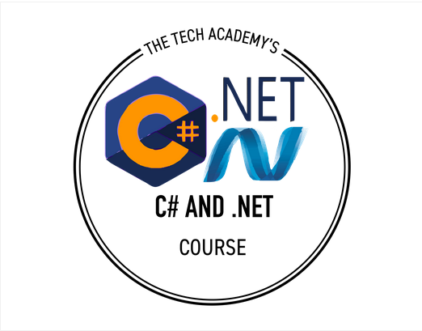
C# / .NET for APIs, services, and desktop-class apps
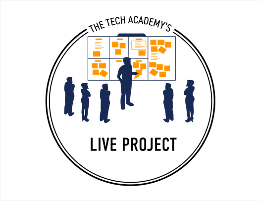
Team live projects — C# MVC and Python/Django
Let's collaborate
Open to conversations on devices, robotics-adjacent systems, coding, and regulated product work — whether that's R&D collaboration, software next to hardware, or something in between.
mirwais.sarwary.mse@gmail.com · LinkedIn · GitHub